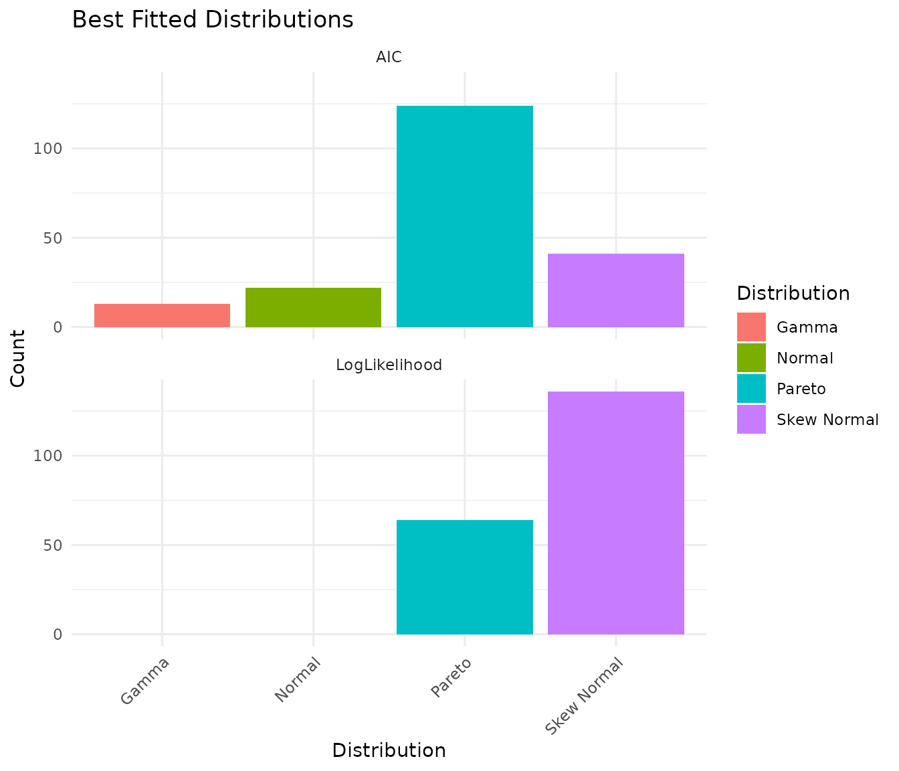
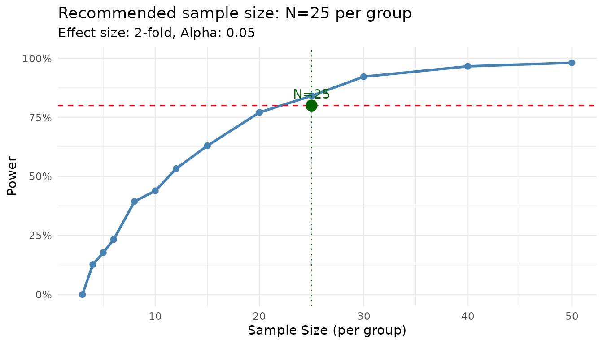
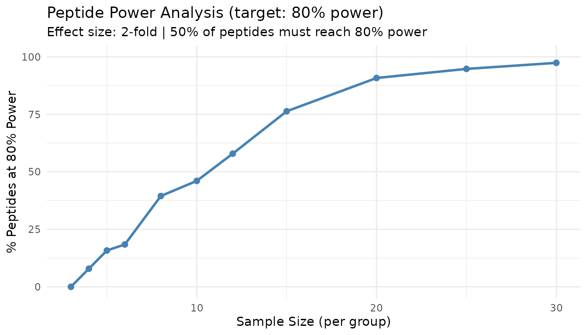

Introduction
peppwR helps researchers answer power analysis questions for phosphoproteomics experiments:
- Sample size: “What sample size do I need for 80% power to detect a 2-fold change?”
- Power: “With N=6 per group, what’s my power to detect a 2-fold change?”
- Effect size: “With N=6 and 80% power, what’s the minimum detectable effect?”
This vignette demonstrates a minimal workflow to get you from zero to power estimates.
Generate Synthetic Pilot Data
Let’s create realistic phosphopeptide abundance data: 100 peptides, 2 conditions (control/treatment), 4 replicates each. We’ll use gamma distributions typical of proteomics data.
set.seed(42)
# Generate peptide-level parameters
n_peptides <- 100
n_per_group <- 4
peptide_params <- tibble::tibble(
peptide_id = paste0("pep_", sprintf("%04d", 1:n_peptides)),
# Shape parameter: 1.5-5 (lower = more skewed)
shape = runif(n_peptides, 1.5, 5),
# Rate parameter: scaled to give realistic abundances
rate = runif(n_peptides, 0.01, 0.1)
)
# Generate observations for each peptide
pilot_data <- peptide_params |>
dplyr::rowwise() |>
dplyr::mutate(
data = list(tibble::tibble(
condition = rep(c("control", "treatment"), each = n_per_group),
replicate = rep(1:n_per_group, 2),
abundance = rgamma(n_per_group * 2, shape = shape, rate = rate)
))
) |>
dplyr::ungroup() |>
dplyr::select(peptide_id, data) |>
tidyr::unnest(data)
# Preview the data
head(pilot_data, 12)
#> # A tibble: 12 × 4
#> peptide_id condition replicate abundance
#> <chr> <chr> <int> <dbl>
#> 1 pep_0001 control 1 106.
#> 2 pep_0001 control 2 99.7
#> 3 pep_0001 control 3 36.1
#> 4 pep_0001 control 4 62.1
#> 5 pep_0001 treatment 1 66.6
#> 6 pep_0001 treatment 2 50.9
#> 7 pep_0001 treatment 3 97.6
#> 8 pep_0001 treatment 4 52.2
#> 9 pep_0002 control 1 143.
#> 10 pep_0002 control 2 295.
#> 11 pep_0002 control 3 216.
#> 12 pep_0002 control 4 89.0Fit Distributions
Use fit_distributions() to determine which statistical
distributions best describe your peptide abundance data.
The distributions parameter controls which distributions
are fitted: - "continuous" (default) - gamma, normal,
lognormal, etc. for abundance data - "counts" - includes
negative binomial for count-based quantification - "all" -
tries all distributions with auto-detection
fits <- fit_distributions(
pilot_data,
id = "peptide_id",
group = "condition",
value = "abundance",
distributions = "continuous"
)
#> Loading required namespace: intervals
print(fits)
#> peppwr_fits object
#> ------------------
#> 200 peptides fitted
#>
#> Best fit distribution counts:
#> Gamma: 13
#> Normal: 22
#> Pareto: 124
#> Skew Normal: 41The output shows how many peptides are best fit by each distribution. This helps you understand the statistical properties of your data.
Visualize Distribution Fits
plot(fits)
The plot shows the count of best-fit distributions by two metrics: - AIC (Akaike Information Criterion): Balances fit quality with model complexity - LogLikelihood: Pure goodness-of-fit measure
When these metrics agree, you can be confident about the distribution choice.
Assess Fit Quality
With larger pilot datasets (n≥15 per group), you can visually assess fit quality using diagnostic plots. peppwR provides two options:
Density overlay - overlays fitted density curves on observed histograms:
# Visual check: does the fitted distribution match the data?
plot_density_overlay(fits, n_overlay = 4)QQ plots - compare observed vs theoretical quantiles:
# Goodness-of-fit assessment via QQ plots
plot_qq(fits, n_plots = 4)With our small pilot data (n=4 per group), these plots are not very
informative - there are simply too few points per peptide for meaningful
visual assessment. See vignette("power-analysis-workflow")
for examples with larger datasets.
If fits look poor, consider: - Using different candidate
distributions - Checking for outliers or data quality issues - Using
on_fit_failure = "empirical" in power analysis to bootstrap
from raw data
A Note on Sample Size and Distribution Detection
With small pilot datasets (n=4 per group = 8 observations per peptide), the “best” distribution may not match the true underlying distribution. Our synthetic data was generated from Gamma distributions, but with small samples you may see Pareto or Skew Normal selected as “best.”
Let’s verify that with larger samples, the correct distribution is identified:
set.seed(42)
# Generate data with larger sample size - 30 per group
large_n_data <- tibble::tibble(
peptide_id = "test_peptide",
condition = rep(c("control", "treatment"), each = 30),
replicate = rep(1:30, 2),
abundance = rgamma(60, shape = 3, rate = 0.05) # True distribution: Gamma
)
large_fits <- fit_distributions(
large_n_data,
id = "peptide_id",
group = "condition",
value = "abundance",
distributions = "continuous"
)
print(large_fits)
#> peppwr_fits object
#> ------------------
#> 2 peptides fitted
#>
#> Best fit distribution counts:
#> Gamma: 2With 30 samples per group, the Gamma distribution is correctly identified as best fit.
Takeaway: For small pilot studies, interpret the “best fit” as “best among candidates given limited data” rather than definitive truth. The fitted parameters are still useful for power simulation regardless of which distribution family is selected.
Power Analysis - Aggregate Mode
If you don’t have pilot data, or want a quick ballpark estimate, use aggregate mode. You specify an assumed distribution and parameters.
Finding Required Sample Size
“How many samples do I need per group to achieve 80% power for detecting a 2-fold change?”
result_n <- power_analysis(
distribution = "gamma",
params = list(shape = 2, rate = 0.05),
effect_size = 2,
target_power = 0.8,
find = "sample_size",
n_sim = 1000
)
print(result_n)
#> peppwr_power analysis
#> ---------------------
#> Mode: aggregate
#>
#> Recommended sample size: N=25 per group
#> Target power: 80%
#> Effect size: 2.00-fold
#>
#> Significance level: 0.05
#> Statistical test: wilcoxon
plot(result_n)
The plot shows the power curve with your target power and the recommended sample size highlighted.
Finding Power at Fixed N
“What’s my power to detect a 2-fold change with N=6 per group?”
result_power <- power_analysis(
distribution = "gamma",
params = list(shape = 2, rate = 0.05),
effect_size = 2,
n_per_group = 6,
find = "power",
n_sim = 1000
)
print(result_power)
#> peppwr_power analysis
#> ---------------------
#> Mode: aggregate
#>
#> Power: 24%
#> Sample size: 6 per group
#> Effect size: 2.00-fold
#>
#> Significance level: 0.05
#> Statistical test: wilcoxonPower Analysis - Per-Peptide Mode
When you have pilot data, use per-peptide mode for more accurate, peptide-specific power estimates. This mode: 1. Uses the fitted distribution for each peptide 2. Simulates power individually 3. Reports what proportion of your peptidome reaches target power
result_pp <- power_analysis(
fits,
effect_size = 2,
target_power = 0.8,
find = "sample_size",
n_sim = 500
)
print(result_pp)
#> peppwr_power analysis
#> ---------------------
#> Mode: per_peptide
#>
#> Recommended sample size: N=12 per group
#> Target power: 80%
#> Effect size: 2.00-fold
#>
#> Significance level: 0.05
#> Statistical test: wilcoxon
plot(result_pp)
This plot shows what percentage of peptides achieve your target power at each sample size. The 50% line indicates where the majority of peptides are well-powered.
Interpreting Per-Peptide Results
Unlike aggregate mode, per-peptide mode acknowledges that not all peptides behave the same. Some peptides may require more samples due to higher variance, while others achieve target power with fewer samples.
The “% of peptides at target power” metric helps you understand: - At what N do most peptides become well-powered? - What fraction of peptides will remain underpowered even with larger samples?